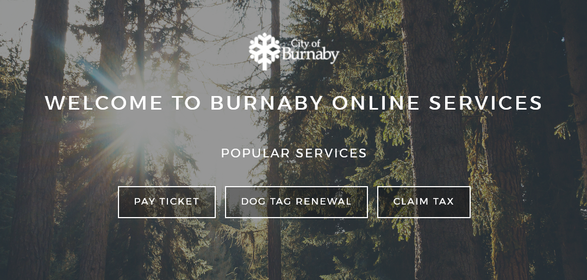
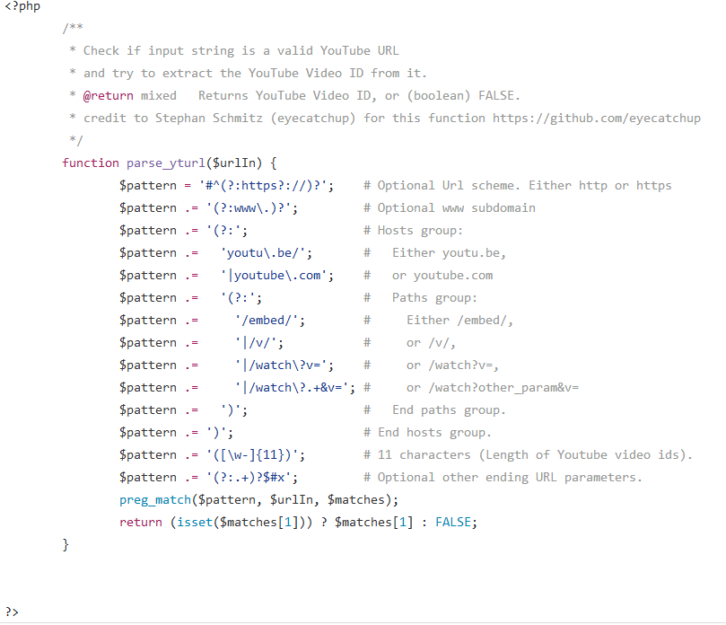

Bio
My name is Nick Mason, I am currently a student at Simon Fraser Univeresity in the Interactive Arts & Technology program. My skills include Filmmaking (sound, editing, cinematography etc.) Programming (html/css, Javascript, Java, C, C#, Python, PHP), Writing, and Game Development (Unity game engine) and Mario Kart. My passion lies on the web and the systems that lie behind it.
The web is currently the most powerful factor in social structures, commerce and business interactions and it is vital to have the systems in place to facilitate those interactions. With not only front end web skills but also backend knowledge, I hope to follow a career path that puts me on the cutting edge of those systems, to both build and maintain them.
Example Projects
Burnaby website project
This is a project I worked on for IAT 235 with two other team members.
My main job was building the sub pages and ensuring that the code was well formatted and error-free. This was not my first exposure to HTML and web site building as I had some experience with it from secondary school, but it was certainly the most comprehensive project I’ve worked on in web development.
We approached this project by looking at existing problems with the burnaby information site and thinking of ways to improve it. We narrowed it down to a few core issues. Among these issues was the fact that the categories set up for different services were not well formulated. They had different services in a few different places, and they also had some services under the wrong categories altogether.
Other times, the categories themselves were not descriptive, or grouped things together in a way such that it wouldn’t make sense. Other general problems were that there was no clear indication to the user where they are in the site, or how far along in an order form they are. Basically, the site had some problems that we attempted to solve. As the person primarily in charge of the information forms, I had to make sure that the user was going to know what they needed to know.
I decided on including simple forms for the user to fill out, and a breadcrumb bar near the top of the form. I worked on the forms page by page, rather than doing passes since if I got one page right, I figured that I could get the subsequent pages.
Youtube Without Login
The idea behind this project is to make a simple URL parsing program that transforms any valid Youtube video URL into one that allows the user to view the video without logging in.
I wrote it in PHP because I wanted to start building my skills in backend web languages (I only had some experience with PHP from another IAT class, and that was only the bare basics). I wanted to use this as a part of a larger program that I wanted to build that would allow users to download a youtube video, but that project never came to fruition.
I started this by thinking about how I would want the program to work if I came here as a user. I decided that the site should basically eat a youtube URL and spit out a simple plaintext URL in response as quickly as possible. This meant it had to work on one page only. The way I went about this is by using regular expressions to parse down any potential youtube url into just the 11 character video id, then put that in a form that works without logging in.
It was straightforward enough of an idea, but the execution was difficult since I had to learn regex, not to mention I was trying to improve my Vim skills at the time which made writing the program rather slow. I used a code snipped from someone else’s youtube downloader to start from, and made sure to understand every part of it, writing comments to explain each part of the code.